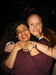
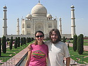
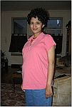
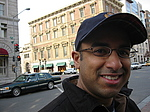
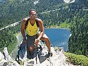
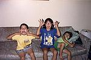
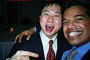
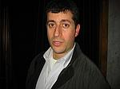
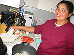
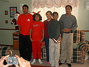

Mala's side
Christine Lovly
Christine and Mala went to Hopkins undergrad together. Christine left for St. Louis to pursue a bunch of degrees, but they've still remained as close as ever. Mala has always admired Christine for her amazing work ethic and for being there whenever Mala needed support. She also sends the most thoughtful greeting cards!
Milla Tonkonogy
Milla and Mala's friendship blossomed out of a love of food. They began by exploring just about every restaurant in the Greater Baltimore area and they haven't stopped yet. Mala will always thank Milla for reassuring her that she would eventually meet her Prince Charming. She was right! Mala and Vinod also want to congratulate Milla and Ben (Prince Charming 2) on getting engaged recently.
Susan LaTuga
 Susan is the connection that brought Mala and Vinod together. Susan and Mala did their residency together and Susan's sister, Anne, did her residency with Vinod. It was actually Susan and Anne's mom that suggested that Mala and Vinod should meet. Who says setups never work? We wish Susan and Mike could be at the wedding with us, but Susan is busy being the cutest pregnant person we know, and is due any moment.
Puja Puri

Vinod's side
Gerald Cherayil
 Gerry and Vinod have been friends for about 30 years. That's scary to think about, isn't it? He's been Vinod's closest confidant and friend all these years. Vinod turns to him whenever he needs some clear, rational, and honest thinking about any issue. He's fortunately blessed (or cursed) with the same sense of humor that Vinod owns. Mala and Vinod are especially happy for Gerry and Kim now that Emma has come into their lives.
Manoj Kurup
  Manu is my big brother and my role model. He's always looked out for me. As a kid, I followed in his every footstep, which I'm sure must've been kinda annoying. We've gotten closer as we've gotten older and I hope to keep learning from him. Manu and Lisa have given me 3 great nieces and nephews - Ariyanna, Suryan and Sunita. (Sorry for the old picture guys, but it is SO cute!!)
Sung Choi
 Sung and I were interns and residents together at NEMC. We became friends over common loves of food, drink, late night discussions and then more food. He taught me that it's not worth travelling somewhere unless there's great food to be found there. Sung and Lei have moved to San Francisco and just had a baby boy, Peter, giving us one more reason to visit San Francisco (as if we needed more reasons!)
David T
 Dave was my senior resident when I was an intern at NEMC, but we've really become close during the past 3 years in NYC. Dave has a way of making any situation seem hilarious. He has refreshing insights into so many situations. Someday he'll get these down into a book or a blog and you'll all be able to benefit. Dave and Theresa got married in August. Dave and I still sit down for drinks, look at each other, think about where we were just 2 years ago, and shake our heads at how lucky we both are.
Mini Prasad
  Mini is my older sister. She is one of the sweetest, kindest people that you'll ever meet. She's always given me pure unconditional affection. I'm not sure what I've done to deserve such a great sister. She and KP have given me 3 beautiful nieces and nephews, Sivan, Hari and Devi.
Last Modified: January 29, 2006